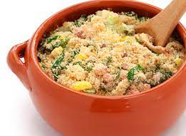

História da farofa
A farofa surgiu entre os índios tupis-guaranis e sua invenção antecedeu a colonização do Brasil pelos portugueses.
Historiadores gastronômicos acreditam que para os índios satisfazerem a fome, precisariam de um alimento mais nutritivo. Sendo assim, jogaram farinha de mandioca na carapaça vazia de uma tartaruga e colocaram para assar. Com isso a gordura da carapaça se soltou e misturou a farinha. Dessa forma nascia a farofa!
Depois do início da colonização, os portugueses começaram a usar essa mistura para suas viagens, afinal, o que seria melhor do que gordura, carne e temperos misturados a farinha seca para não perecer e suportar as adversidades do dia a dia nas expedições?
Engana-se quem pensa que a farofa é coisa de “povão” e não da realeza. Dom João VI não saía sem sua farofa em punhos.
Hoje, a farofa é usada como acompanhamento e seu ingrediente principal é a farinha de mandioca ou a de milho, além de ingredientes como o bacon, cebola, alho entre outros. Em alguns casos, chega a ser prato principal, quando generosamente incrementada.
Cheia de versatilidade, está na mesa dos brasileiros em ocasiões diárias ou festivas e combina com quase toda a culinária nacional.
